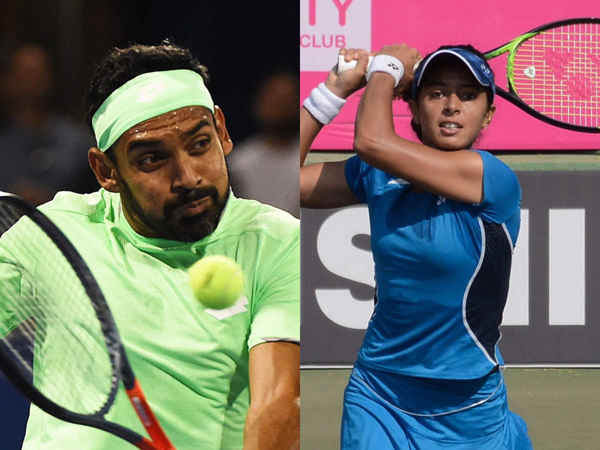

Asian Games medal winners Ankita Raina and Divij Sharan are set to be nominated for the Arjuna award by the national tennis federation, which plans to send former Davis Cup coach Nandan Bal's name for the Dhyan Chand honour.
The 27-year-old Ankita had won a women's singles bronze medal at the 2018 edition of the Asian Games and also dished out a strong performance in the Fed Cup, where she played a key role in India's qualification to the World Group play-offs for the first time. Delhi-lad Sharan had won gold medal in the men's doubles event in Jakarta along with compatriot Rohan Bopanna.
He also became India's top doubles player in October 2019 before Bopanna took back the position.
The 34-year-old also won two ATP titles in the 2019 season -- Tata Open Maharashtra in Pune with Bopanna and at St. Petersburg with Igor Zelenay
"They are eligible and most deserving this year for the Arjuna honour. We will recommend their nomination," All India Tennis Association (AITA) Secretary General Hironmoy Chatterjee told PTI.